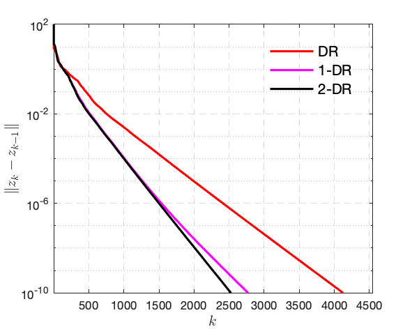
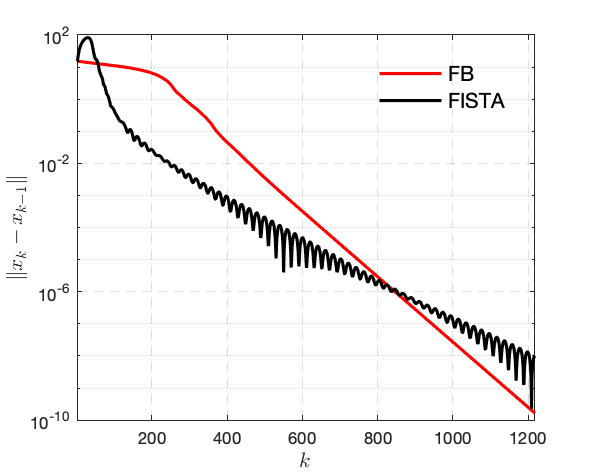

Pricipal Component Pursuit
In this project, we will apply several classic operator splitting schemes to solve the Principal Component Pursuit (PCP, a.k.a. Robust Principal Component Analysis) problem, proposed by Candès, Li, Ma and Wright, 2009.
1. Forward model
Suppose we have the following observation
\[ \begin{equation}\label{eq:forward} f = x + y + \epsilon , \end{equation} \]
where \(x \in \mathbb{R}^{m \times n}\) is a sparse matrix, \(y \in \mathbb{R}^{m \times n}\) is a low-rank matrix and \(\epsilon \in \mathbb{R}^{m \times n}\) is white Gaussian noise. The goal is to recover the sparse and low-rank components from the observation \(f\). There are various formulations of this decomposition, in the following we mainly focus on several convex approaches.
2. Noiseless case
When there is no noise, i.e. \(\epsilon=0\), the decomposition problem can be achieved via the following constrained convex optimisation problem
\[ \begin{equation}\label{eq:pcp-1} \min_{x , y \in \mathbb{R}^{m \times n}} \mu \|{x}\|_1 + \|{y}\|_* \quad \textrm{s.t.} \quad x + y = f . \end{equation} \]
For the above problem, there are two methods can be applied: Douglas–Rachford splitting and Backward–Backward splitting with parameter continuation. Throughout the section, consider
\[ \begin{equation*} \mu = \tfrac{1}{ \sqrt{\max \{m, n\}} } . \end{equation*} \]
2.1 Douglas–Rachford splitting
Let's first define several notations
\[ \begin{equation}\label{eq:lift} z = \begin{pmatrix} x \\ y \end{pmatrix} \in \mathbb{R}^{2m \times n} ,\quad R(z) = \mu \|{x}\|_1 + \|{y}\|_* ,\quad A = \begin{bmatrix} \mathrm{Id} & \mathrm{Id} \end{bmatrix} . \end{equation} \]
Then \(\eqref{eq:pcp-1}\) can be written as
\[ \begin{equation}\label{eq:pcp-2} \min_{z \in \mathbb{R}^{2m \times n}} R(z) \quad \textrm{s.t.} \quad A z = f . \end{equation} \]
Define the set \(\Omega := \{ z \in \mathbb{R}^{2m \times n} : A z = f \}\), then we further get
\[ \begin{equation}\label{eq:pcp-3} \min_{z \in \mathbb{R}^{2m \times n}} R(z) + \iota_{\Omega}(z) , \end{equation} \]
which can be handled by Douglas–Rachford splitting easily. Let \(z = \begin{pmatrix} z_1 \\ z_2 \end{pmatrix}\)
The proximal mapping of \(R\)
\[ \begin{equation*} \mathrm{prox}_{\gamma R} (z) = \begin{pmatrix} \mathrm{prox}_{\gamma \|{\cdot}\|_1} (z_1) \\ \mathrm{prox}_{\gamma\mu \|{\cdot}\|_*} (z_2) \end{pmatrix} . \end{equation*} \]
The projection mapping onto \(\Omega\)
\[ \begin{equation*} \mathrm{proj}_{\Omega} (z) = z + A^T (AA^T)^{-1}(f - Az) . \end{equation*} \]
Therefore, the iteration of Douglas–Rachford the reads: let \(\gamma > 0\), \(z_{1,0} = 0, z_{2,0} = f\) and \(v = \mathrm{proj}_{\Omega} (z_0)\)
\[ \begin{equation*} \begin{aligned} u_{1,k+1} &= \mathcal{T}_{\gamma\mu} ( 2v_{1,k} - z_{1,k} ) \\ u_{2,k+1} &= U \mathcal{T}_{\gamma} ( \Sigma ) V^T \\ z_{1,k+1} &= z_{1,k} + u_{1,k+1} - v_{1,k} \\ z_{2,k+1} &= z_{2,k} + u_{2,k+1} - v_{2,k} \\ v_{k+1} &= \mathrm{proj}_{\Omega} (z_{k+1}) , \end{aligned} \end{equation*} \]
where \(\mathcal{T}_{\gamma}(\cdot)\) is the soft-thresholding operation and \(U\Sigma V^T\) is the SVD of \(2v_{2,k} - z_{2,k}\).
3. Noisy case
When \(\epsilon \neq 0\), then instead of the constrained optimisation problem, we need to consider the following regularised least square
\[ \begin{equation}\label{eq:pcp-7} \min_{x, y \in\mathbb{R}^{m\times n}} \nu \left({ \tfrac{1}{ \sqrt{ \max \{m,n\} } } \|{x}\|_1 + \|{y}\|_* }\right) + \tfrac{1}{2}\|{ x + y - f }\|^2 , \end{equation} \]
where \(\nu > 0\) is tradeoff parameter. Follow the definitions in eqref{eq:lift}, we obtain the following simpler formulation
\[ \begin{equation}\label{eq:pcp-8} \min_{z \in\mathbb{R}^{2m\times n}} \nu R(z) + \tfrac{1}{2}\|{ Az - f }\|^2 , \end{equation} \]
which can be easily handled by Forward–Backward splitting and FISTA.
Now again, by applying the Moreau envelope trick, \(\eqref{eq:pcp-7}\) is equivalent to
\[ \begin{equation}\label{eq:pcp-9} \min_{x \in \mathbb{R}^{m\times n}} \tfrac{\nu}{ \sqrt{ \max \{m,n\} } } \|{x}\|_1 + { ^1\left({ \nu \|{\cdot}\|_1}\right)(f-x) } , \end{equation} \]
where \({ ^1\left({ \nu \|{\cdot}\|_1}\right)(f-x) }\) is the Moreau envelope parameterised by \(1\), hence its gradient is \(1\)-Lipschitz.
4. MATLAB implementation
Generating \(f\) based on \(\eqref{eq:forward}\)
n = [32, 32]; % dimension of matrix % low-rank matrix r = 4; xl0 = rand(n(1),r)*diag(r:-1:1)*rand(r,n(2)); xl0 = xl0/max(abs(xl0(:))) *50; % sparse matrix, sparsity = 0.2 xs0 = rand(n)*rand(n); xs0 = xs0/max(abs(xs0(:))) *50; ratio = 0.2; mask = proj_mask(xs0, ratio, 'p'); xs0 = xs0 .* mask; % exact observation f0 = xs0 + xl0; % generate noise sigma = 1e-2*std(f0(:)); % noisy observation f = xs0 + xl0 + sigma*randn(n); % comment this line for the exact scenario
Details of the codes can be found here. In the following, we mainly demonstrate the numerical performance comparison.
4.2 Exact case and Douglas–Rachford splitting
The numerical comparison of Douglas–Rachford and its inertial versions is illustrated in the figure below.
1-DR inertial parameter \(a = [0.4, 0]\)
2-DR inertial parameter \(a = [0.5, -0.1]\)
Example for which two inertial versions are almost the same.
 |
Example for which \(2\)-step inertial DR is much faster under the same parameter choices.
|  |
4.3 Inexact case and Forward–Backward splitting/FISTA
Numerical comparison of Forward–Backward and FISTA.
|  |